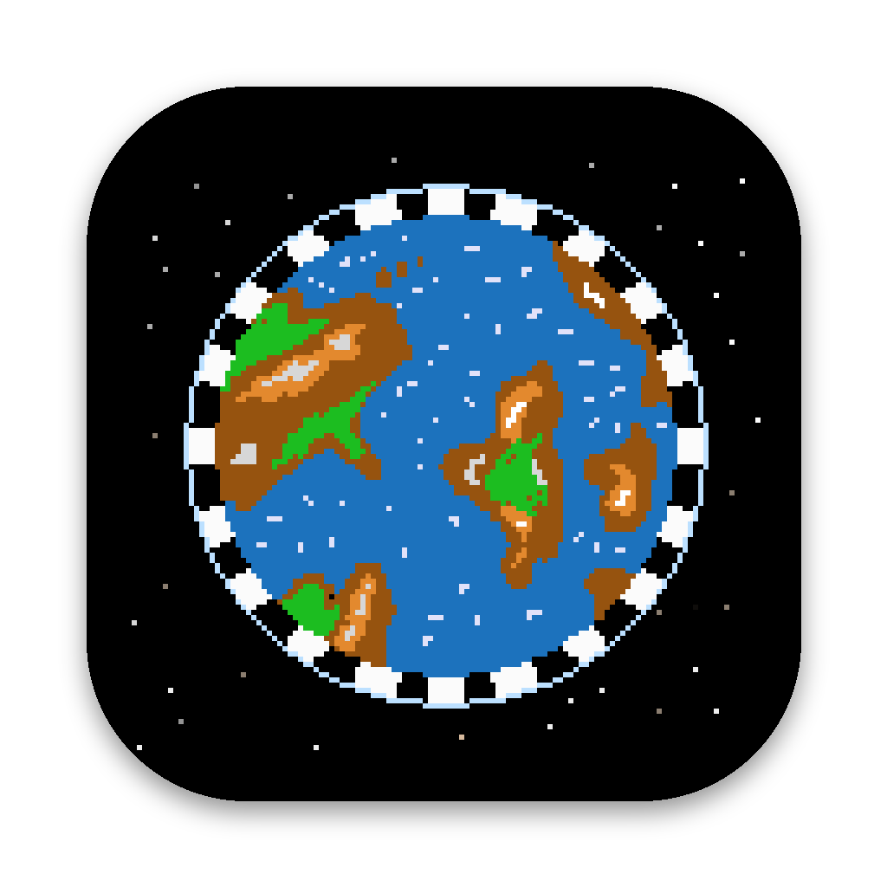

Little hikers walk a real piece of the Earth and play music from the ground under their feet: its height, slope, tiredness, land type and temperature.
Sound needs a click to begin. Best with headphones. Maps come from OpenStreetMap and AWS Terrain Tiles.